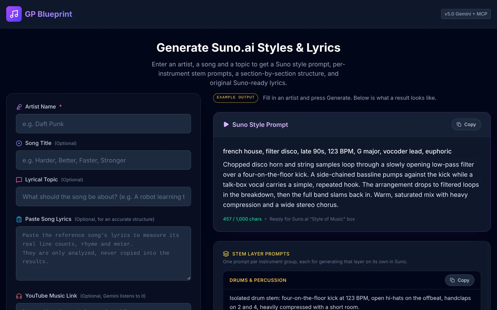

1 · Plan
GP Blueprint
Name an artist you love and get a complete plan for a new song in their style, ready to paste into Suno.
- A rich style prompt, up to Suno's 1,000 characters, with no artist names to get rejected.
- Stem prompts for each instrument group, so you can generate layers one at a time.
- A section-by-section structure: bars, seconds, line counts, rhyme scheme and syllables for every section, on a coloured timeline. Copy it into Lyricpad and it writes a whole song to fit.
- Original lyrics written to fit that structure exactly.
- Grounded in real audio: MusicAtlas measures the actual recording's tempo and key, and Gemini can listen to a YouTube Music link itself.
